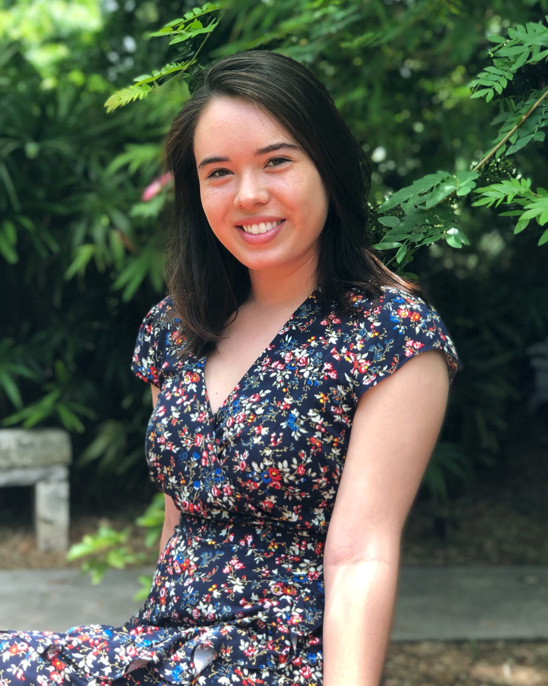

Hello!
I'm Katherine, and sometimes I'm an artist but mostly I work in technology, currently at United Airlines. I'm a recent college grad from Northwestern University, where I majored in applied mathematics and minored in computer science and pure mathematics. I'm endlessly fascinated by the ways that math, CS, and art interact and look for ways to combine them in my work.
I also write about my favorite things on my recommendation blog, Never Be Bored. Each post is centered around one thing I love—a book or a movie or something. Based on what I liked about that thing, I have three other recommendations to go with it. The idea is to make more meaningful recs than whatever an online store's algorithm could give you, and to suggest things that you might not have seen otherwise by having the recs come from all different creative forms—music to go with movies and webcomics to go with books. At least one rec from each post is chosen to be available online for free (or through Netflix, Amazon Prime, Hulu, or Spotify).
